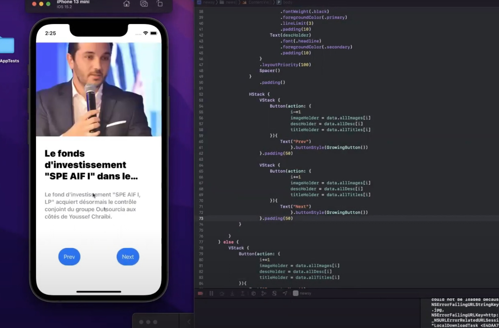

This course challenged me more than almost any other at UGA, which is a great thing! Before taking this class, I was not comfortable with anything related to the Apple ecosystem but wanted to familiarize myself with the technology since it represents such a large portion of the mobile device market. Although my primary interest in mobile development centers around React Native, this course based in Xcode and Swift really helped me to understand the basics of mobile development and how iPhone apps work at a very basic level. Another skill I picked up in this class that I found particularly useful was connecting to APIs and reading from JSON files. These are things that I’ve implemented both in subsequent projects and work assignments.
This class had a lot of cool projects because they differed so greatly from what I had experienced in my web design classes. Mobile applications function a bit differently and allow for some different sorts of interaction, which was really interesting. One of our assignments required us to build an app structured around calling out to and utilizing information from an API. I ended up using some public Film APIs that connected with IMDb and streaming platforms to pull information like reviews and descriptions of any film titles searched by a user. This project and class as a whole taught me how to adapt to new environments quickly. I was unfamiliar with mobile programming, Apple devices, and using APIs but was able to make all three work together by the end of the semester.